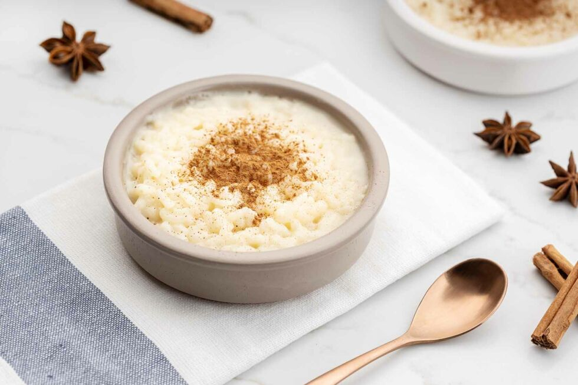

Arroz con leche

Description
Dessert made with rice and milk.
Ingredients
- Rice
- Milk
- Cinnamon
- Sugar
- Lemon peel
Steps
-
Put the milk, cinnamon stick and lemon peel on the stove to infuse
-
Add the rice once the milk has infused and stir every 2/3 minutes so it
doesnt stick to the pot
- Add the sugar and keep mixing it until its fully dissolved
- Let it cool and put some ground cinnamon on top.